![[Put logo here]](../media/logo.png)
Welcome to the Jubilee
Part One : The Seventies
1972
- Not a great time to be in England...
- Drastic energy shortages led to the "three day week" in the winter of 1973 and a state of emergency; miners and dockers went on strike.
- A Tory Chancellor cut taxes: inflation soared; the pound was devalued; unemployment soared... sound familiar?
- In Ireland, following Bloody Sunday, IRA bombing campaigns began; the "Troubles" ...
- Idi Amin, president of Uganda, expelled thousands of Asians to the UK, many of whom opened corner shops and thus revived the British economy
- Second "Cod war" with Iceland (we lost)
- Watergate scandal in the U.S. leading eventually to President Nixon's resignation
- It wasn't all bad
- We joined the Common Market in January 1972 (no-one noticed)
- General discontent eventually brought down Heath's Tory government
- Jesus Christ Superstar opened in the West End; Emmerdale Farm started on ITV
- The New Seekers nearly won Eurovision (they came second, after Luxembourg's Vicky Leandros)
- Your flexible friend the Access credit card first appeared
- Fortunately, we were in Africa
... Malawi! where it all started ...
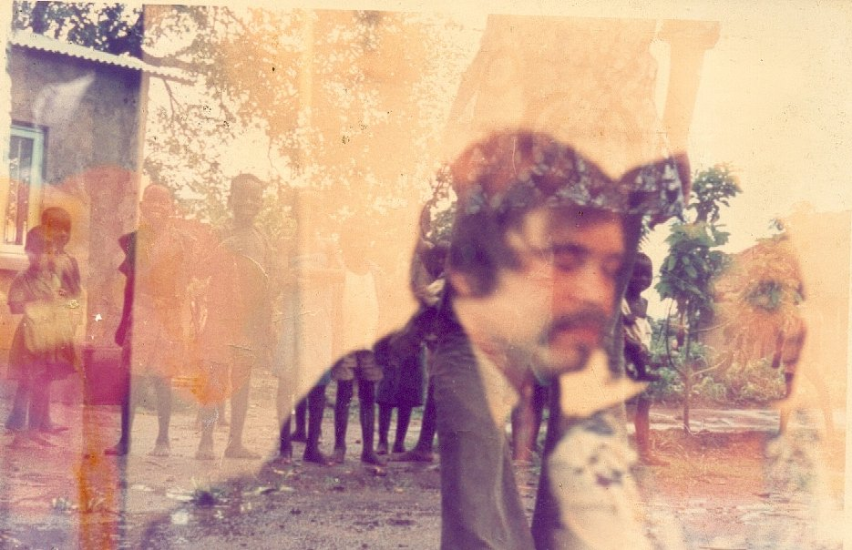
- December 1972 : a serendipitous double exposure
It was just a simple Mauritian wedding
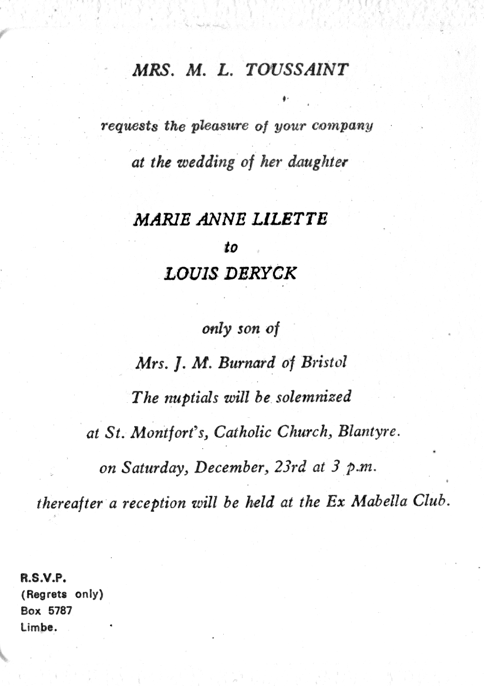
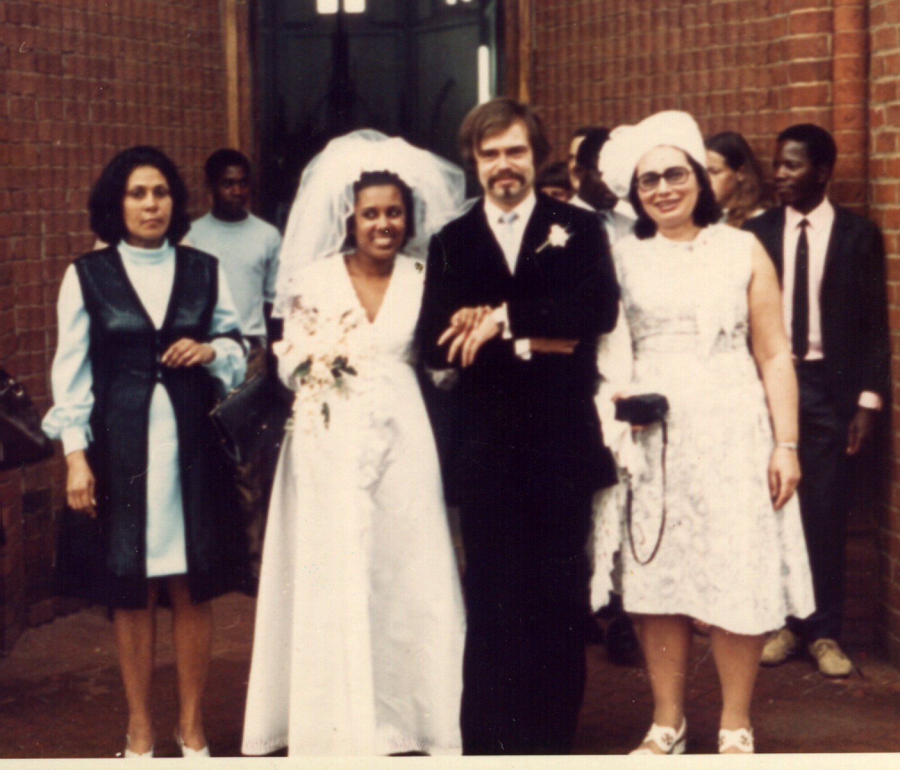
23 December 1972 : Limbe Cathedral
I don't remember much about the party
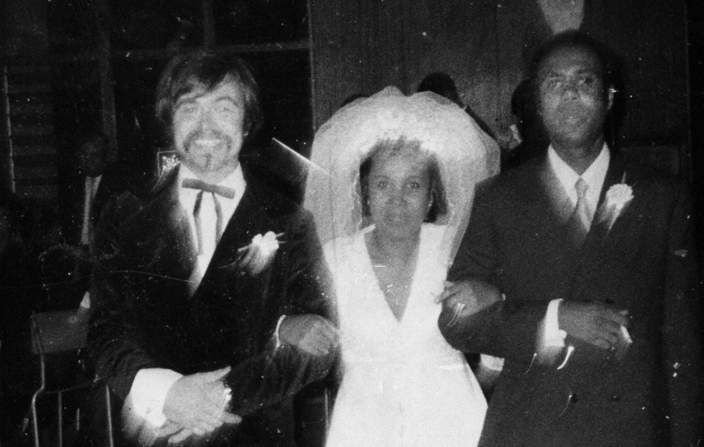
- There was an appropriate amount of dancing and eating
- And Guy made a speech
- But sadly, most photos of the event are lost (there were goat balls)
Jan 1972 - Dec 1973
My first real academic job was as Lecturer in English, at a newly-established University in the equally newly-established country of Malawi. To be honest, I didn't apply for a job here; I applied for one in Fiji, but whatever remnant of empire was responsible for recruiting to commonwealth universities offered me this one instead. It was tropical, it was a job. I took it.
With the job came my first proper flat and my first car, and indeed my first personal servant unless you count Oxford scouts. His name was Jim Kandiado and he looked after me, and (in due course) Lilette very well.
The flat was on the ground floor of a modern block, just over the road from the Kamuzu Stadium, on the Makata road. and it looked like this:
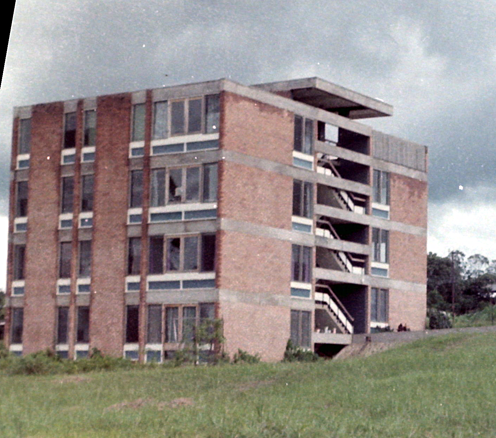
I lived here for an eventful year, coming to terms with the strangeness of being a mzungu, and an academic to boot. The beautiful Mauritian girl who moved in with me helped a lot. After a year the University moved to Zomba, and so therefore did we. This photo shows the huge University lorry which came to move us:
Our new home was much more traditional. In fact, I dont even think it had an address. It was one of a small number of European Bungalows built along the Old Naisi Road in the days when the Colonial Government occupied Zomba. With independence, the government had moved to somewhere else, leaving behind some rather fine antique housing stock for expats like me and my fellow academics to snap up.
From the garden of our bungalow (which had all sorts of fruit trees) you could see Lake Chirwa on a clear day. There was a village built of mud huts within walking distance and wild pigs in the surrounding gardens. I learned how to to drive around the Zomba plateau at dangerous speeds so as to get to the Zomba Gymkhana Club in time for the ham sandwich which Lilette was inexplicably craving. Belinda was born here.
1974: Back to Europe
We delayed as long as possible the business of finding a post-Malawian residence by visiting friends and families on an extended European tour, courtesy of the flexible air ticket which I got as a returning expat. Belinda was not entirely enthusiastic but she had no choice.
From Malawi, we went via Lusaka in Zambia to Rome and then to Bologna where we saw the New Year in with Guy's commie chums (in those days the Italian communist party was very middle class)
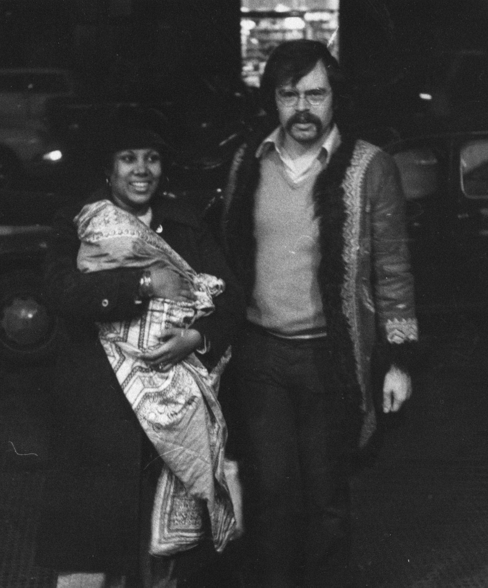
Bologna, 1 Jan 1974
Then we proceeded to Paris and to Caen to introduce Tata Nicole and Tonton Jef to Belinda (and vice versa)
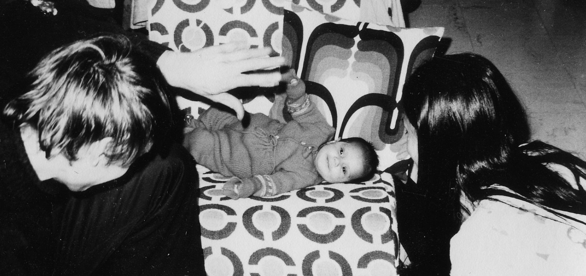
And finally, I drove a hire car through the darkness to Hamilton Road, Oxford (thanks for the floor, Pam) and thence to my mum's flat in Bristol, where we crashed for a bit
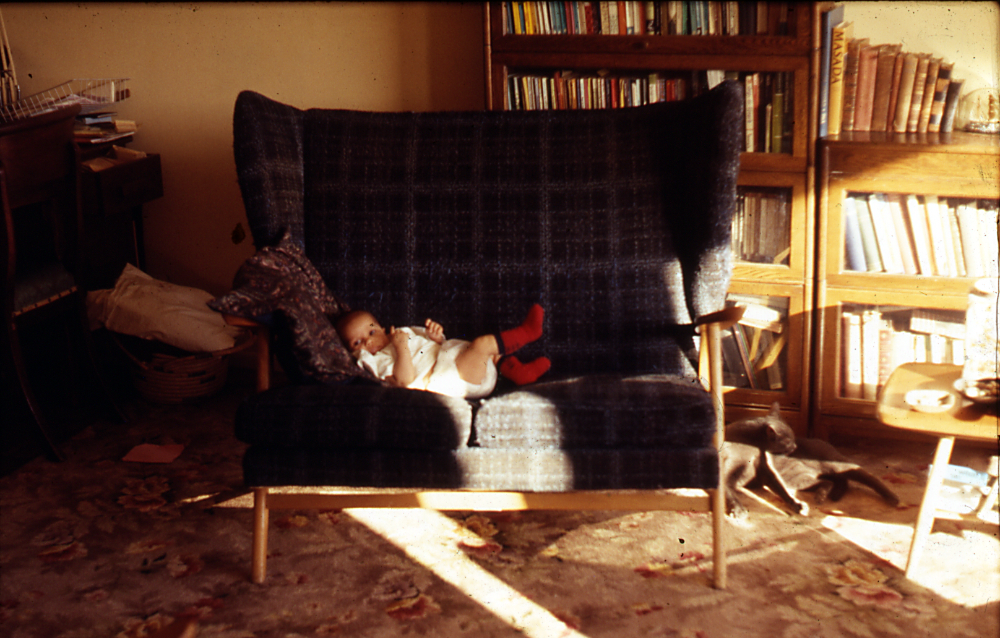
12 Harefields
Eventually we settled down in a rented modern house in Harefields, in the unfashionably far North of Oxford. It looked like this:
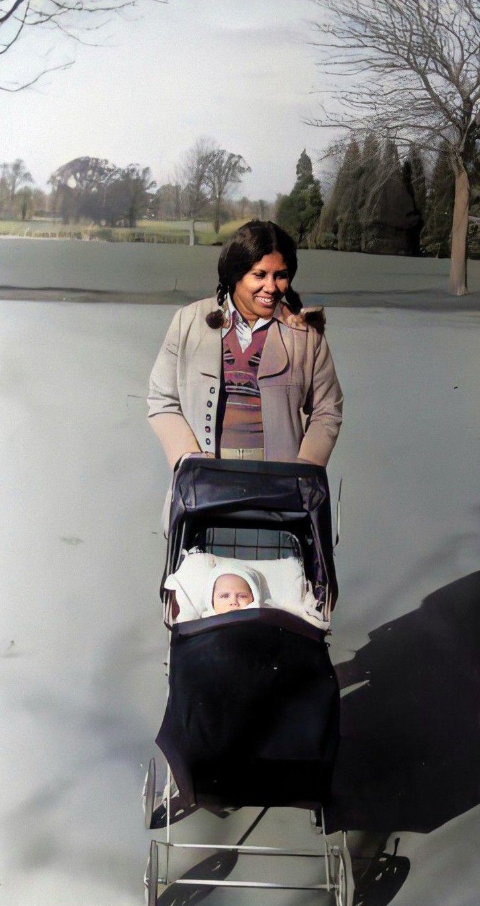
Healthy walk in Cutteslowe Park, March 1974. Belinda snoozes.
Lilette did a lot of pram pushing and home building, and some shopping.
In April I got a job at the University's computing service: not a very demanding one, but it paid the rent, and left me ample time to think about other things.
Cutteslowe life
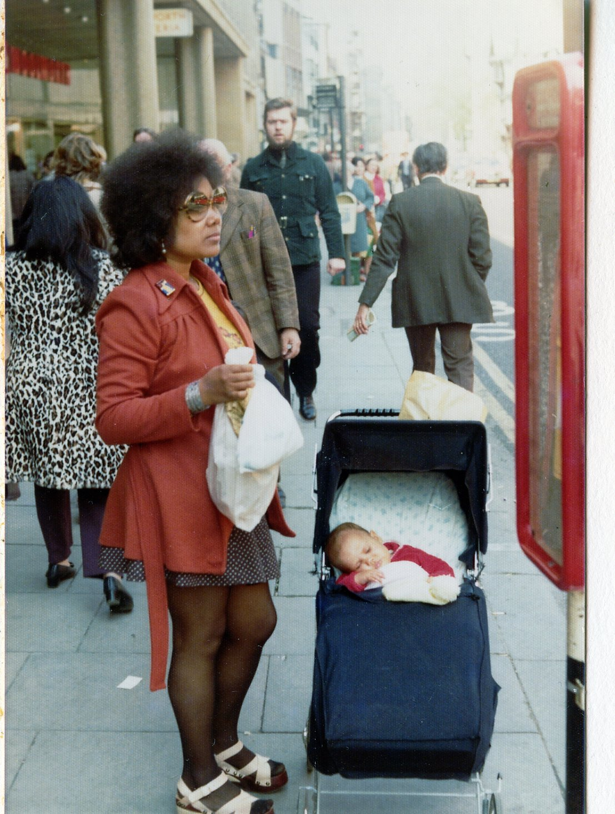
Waiting for the bus in Cornmarket, April 1974. Belinda continues to snooze
Some traditions started...
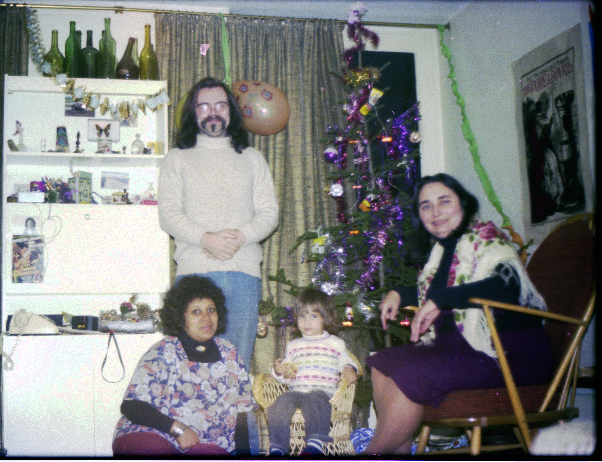
December 1974 and Grandma visits to honour our first traditional Christmas tree
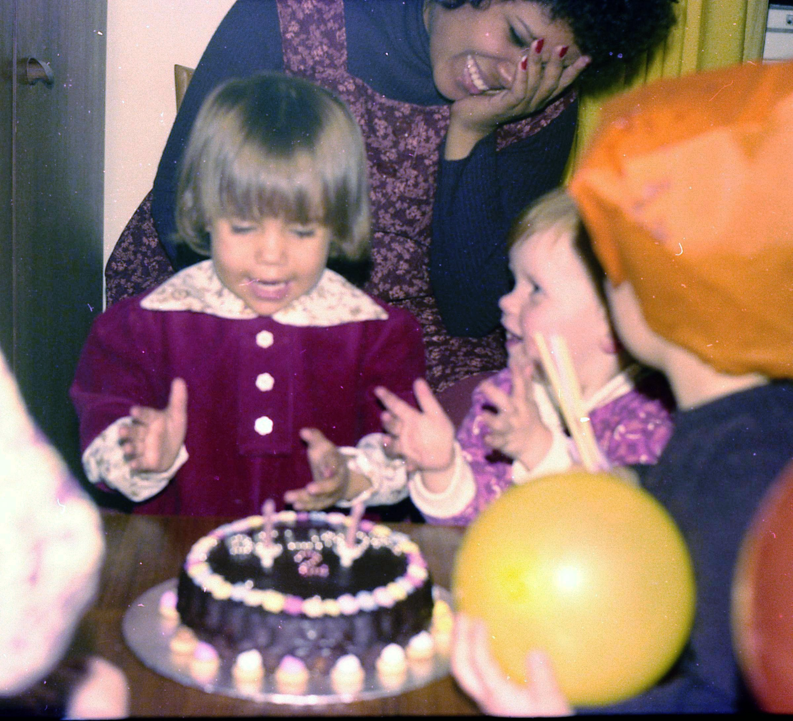
Belinda's lifelong fascination with chocolate cake probably dates back to her second birthday in 1975
Hello Sarah Daisy!
New baby in the house (much more interesting than Present, the cat)
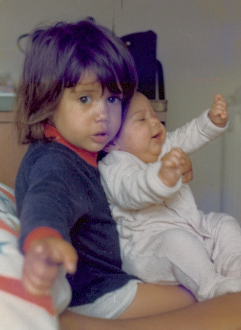
Sarah Daisy arrived (just in time to make a difference to my tax return) 2 April 1976
18 Plantation Rd
- In the spring of 1977 we became property owners, courtesy of the Halifax Building Society. We paid £7000 for 18 Plantation Rd, a little house in North Oxford which St Johns College had decided it wasn't worth their while keeping since one of its exterior walls was bowed, and it needed modernisation, and it had squatters.
- We hired a local builder called Mr Wastie to set about rectifying the most pressing defects (a huge bolt was fixed into the bowed wall, the nice wooden partitions upstairs were covered by boring but comparatively fireproof plaster board, we installed a bathroom with a real bath in it, and so on: total cost about £5000 I think).
- The squatters were not a problem: indeed they left us a nice welcome message scrawled in charcoal on the wall.
- And thus we moved up the property ladder, and into Central North Oxford, on the fringes of Jericho. Its front looked much the same then as it does now...
Jericho life in the 70s
To cope with the winter. Lilette made some theatrical velvet curtains to keep out the draughts.
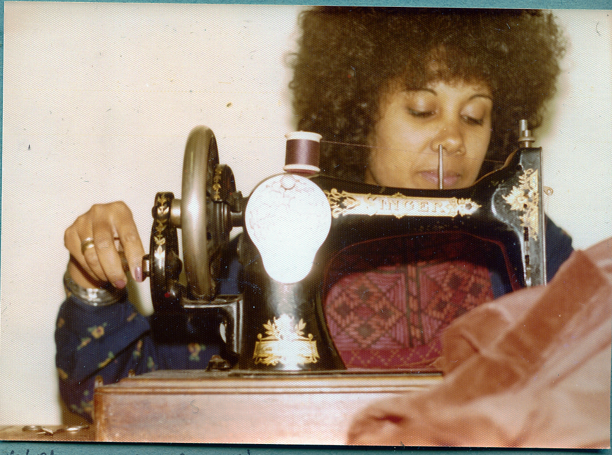
Belinda and Sarah went to St Barnabas and made lots of friends.
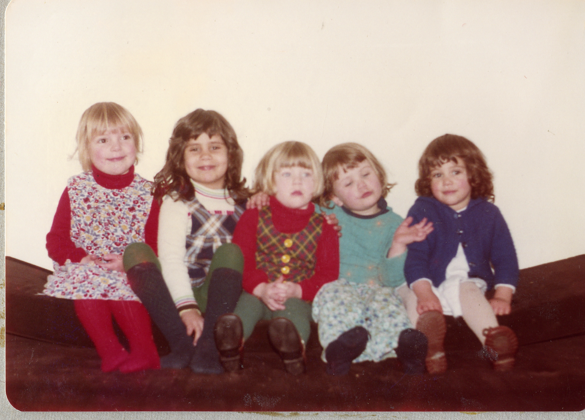
Joanna, Belinda, Charlotte, Martha, and Sarah. Definitely not posing on our foamy sofa.
We drank in the Victoria occasionally, and the Gardeners more frequently, especially at Sunday lunch time. And there were plenty of festivities and street fairs marking the passage of time.
1977 : Travelling
In August, I got funding to attend an International Summer School on Computational Linguistics in Pisa.
A rare early sighting of me in a conference suit and tie
This gave us an excuse to swop houses with a friend of Guy's who had a villa in Florence, and also to introduce the girls to Vergato.
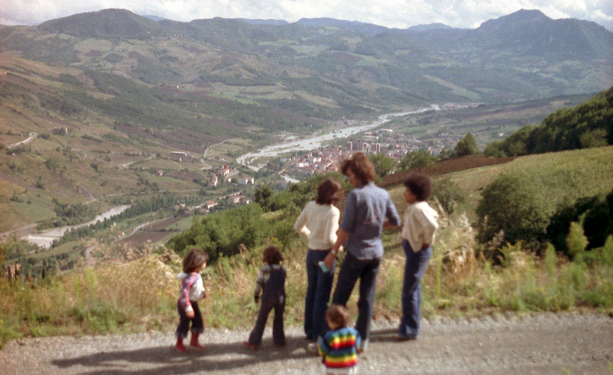
Aloysius liked it so much he stayed there and had to be returned by post.
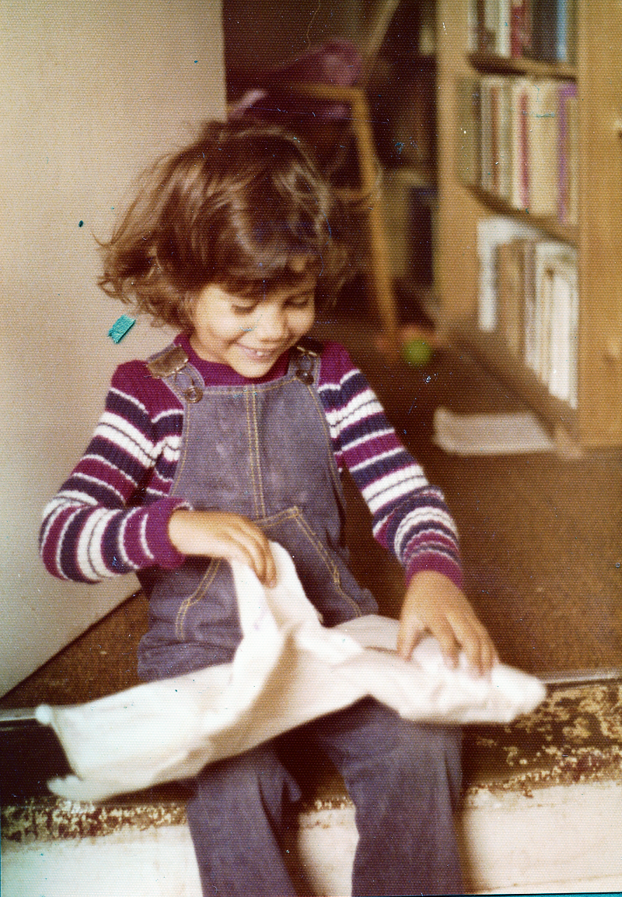
Visitors
February 1978: Despite the snow, Pam baby-sat so that we could run away to Paris for a few days child-free.
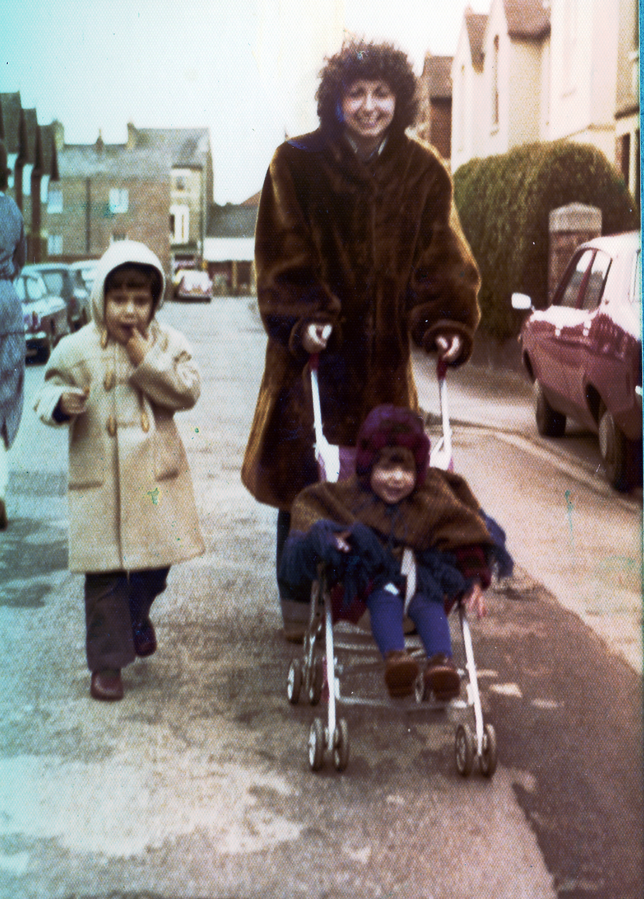
August 1978: Grandmère Toussaint visited
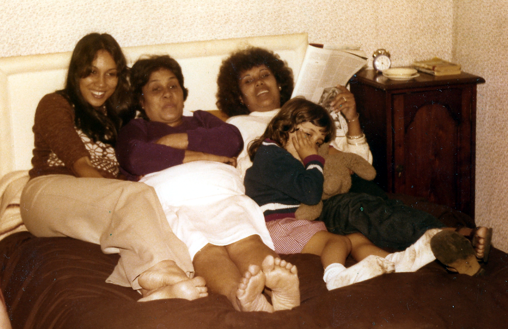
1979 : Hols, and how
By the end of the decade, we were a much travelled lot. In 1979 we took three family holidays:
- In April, we stayed at Viv's house on the Isle of Wight
- In May, we went to see Jef, Nicole and all the Lebranchus en masse in France
- In September we went to the Italian seaside for a change, end-of-season Rimini
Sarah's chin had a dramatic accident in Bologna:
Ready for a new decade
Our policy of continuous home improvement resulted in some new kitchen cupboards, to celebrate which I suggested moustaches all round.
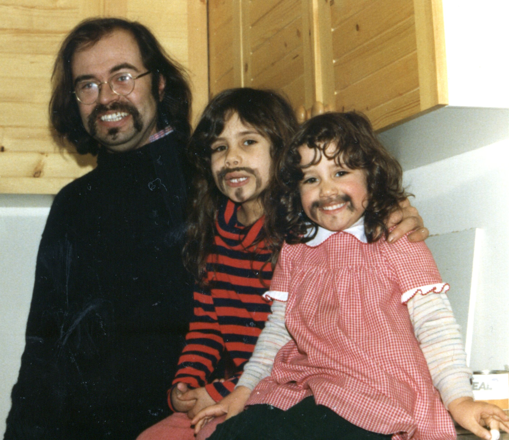
(Sarah's chin had recovered by October)